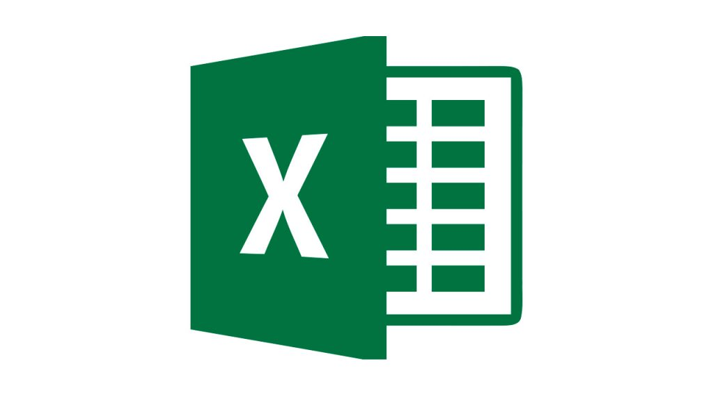
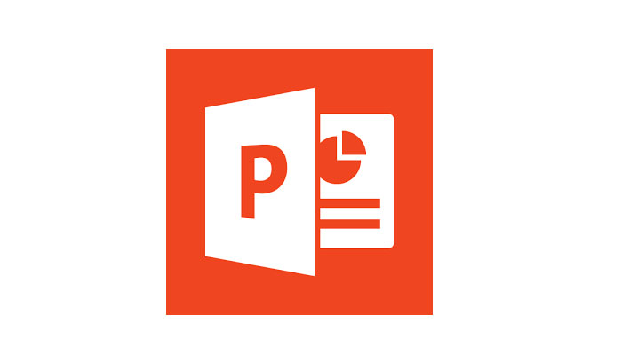

DATOS PERSONALES
FORMACIÓN ACADÉMICA
INFORMACIÓN COMPLEMENTARIA
EXPERIENCIA PERSONAL
IDIOMAS
INFORMÁTICA
Jaime Serrano Maya
Me encanta el deporte en general, pero mi pasión pertenece al baloncesto, también me gusta mucho las redes sociales y la compra y venta por internet y el SEO.
Pero creo que es mejor que me conozcas en mi perfil de GitHub
DATOS PERSONALES
Nombre: Jaime Serrano Maya
Dirección: C/ Gonzalo Martín, 73, 1ºA2
Teléfono: 629 43 52 37
Correo: jaimesema14@gmail.com
VOLVER
FORMACIÓN ACADÉMICA
- ESO en I.E.S. Profesor Tierno Galván de La Rambla
- Grado Medio de Gestión Administrativa y Finanzas en el I.E.S. EMILIIO CANALEJO OLMEDA de Montilla
- Grado Medio de Sistemas Microinformáticos y Redes en el I.E.S. Profesor Tierno Galván de La Rambla
VOLVER
INFORMACIÓN COMPLEMENTARIA
- Curso de SEO, marketing online y estrategia digital
- Curso de primer nivel de entrenador (Federación Española de Baloncesto)
- Curso de primeros auxilios primarios
VOLVER
EXPERIENCIA PERSONAL
- Prácticas no retribuidas
Estuve tres meses de prácticas en la Agencia de Desarrollo del Excmo. Ayuntamiento de La Rambla
- Trabajo como entrenador
Llevo diez años como entrenador en el club dónde me formé como jugador y como entrenador. Teniendo una muy buena experiencia también como entrenador ayudante de la Selección Cordobesa de Premini Femenino
- Trabajador del Ayuntamiento
Después de terminar las prácticas en la Agencia de Desarrollo del Ayuntamiento, fui inscrito a una bolsa de trabajo, y posteriormente elegido para trabajar durante un mes como peón de la construcción
- Trabajador de Envases Rambleños S.L.
Experiencia de tres meses más uno extra renovado en la plantilla como peón de maquinista en máquina
VOLVER
IDIOMAS
Nivel de inglés básico
VOLVER
INFORMÁTICA
He manejado durante bastantes horas los programas Word, Excel y Power Point. También he manejado en menos cantidad de horas Access
Actualmente estoy acabando un grado medio de Sistemas Microinformáticos y Redes para terminar siendo técnico
|
Word
|
500 Horas
|
|
Excel
|
500 Horas
|
|
Power Point
|
250 Horas
|
Access
|
250 Horas
|
VOLVER